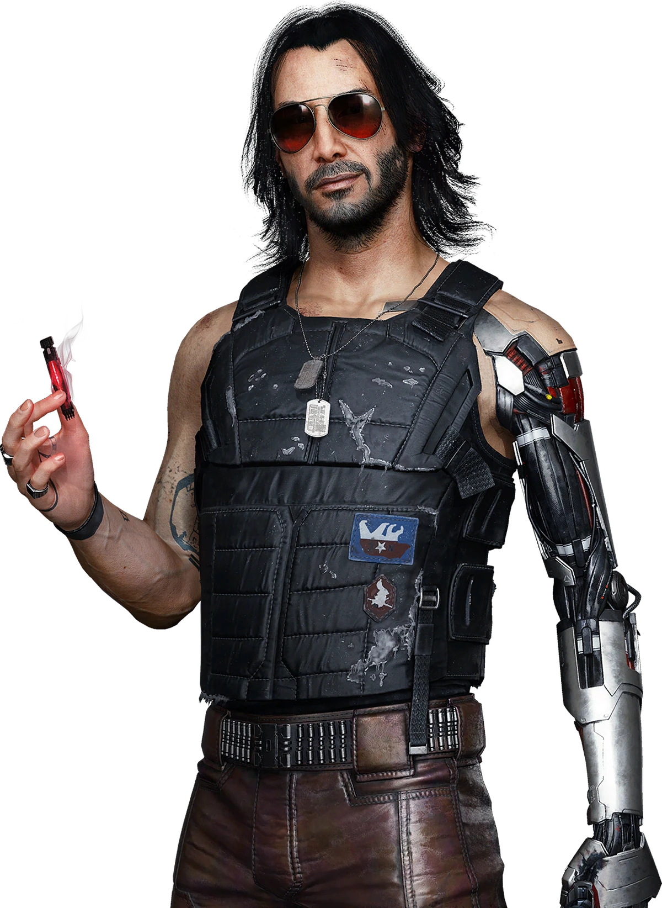
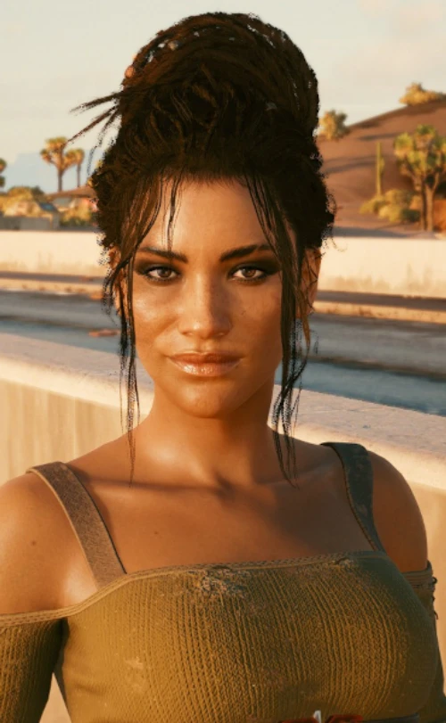
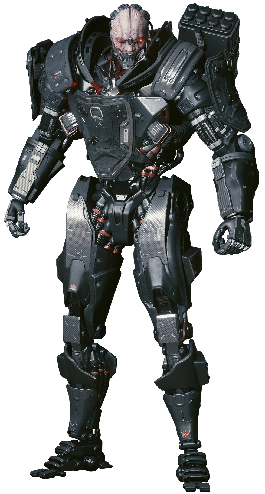
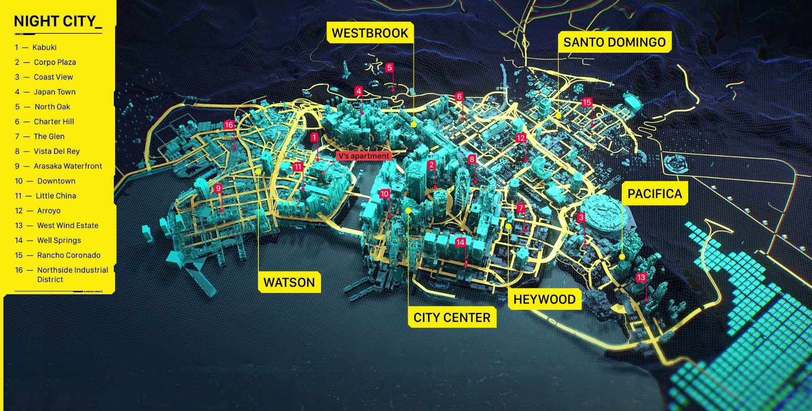

Zaryzykuj wszystko dla nieśmiertelności. Zostań Cyber-najemnikiem.

Legendarny rockerboy, były wokalista zespołu Samurai. Zamknięty jako cyfrowy duch w Twojej głowie. Ma jeden cel: spalić Arasakę do samych fundamentów.

Niezależna, zadziorna i cholernie lojalna. Była członkini klanu Aldecaldos, która próbuje przetrwać na pustkowiach. Najlepszy wspólnik i kierowca w Badlands.

Więcej maszyny niż człowieka. Żywa broń na posługach korporacji Arasaka. Bezwzględny potwór, który nie zna litości i czeka na Ciebie na samym końcu drogi.
Sektor zmapowany. Wybierz dzielnicę i przejmij kontrolę nad miastem przyszłości.
